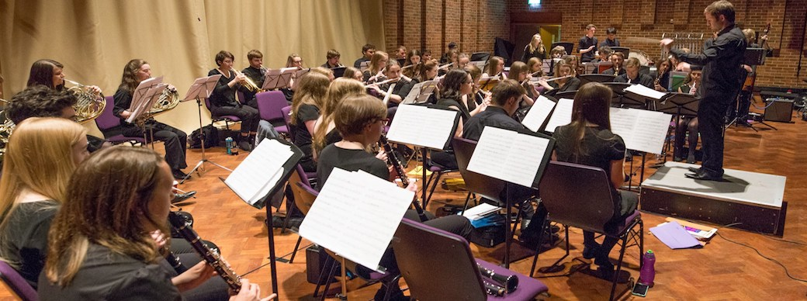

About Us
SUCB is an entirely unauditioned wind band, welcoming musicians of all standards and abilities. We play a wide variety of music ranging from wind band standards, music from film and stage, marches, to classical pieces and seasonal favourites! Rehearsals are weekly, playing to a high standard whilst also emphasising the social side of university life.
We have regular socials such as pub crawls, meals, balls and day trips. The biggest event on the social calendar is our annual tour to an exotic European destination to play in a new environment. It is often the highlight of the year for many people and takes place during the Easter holiday.